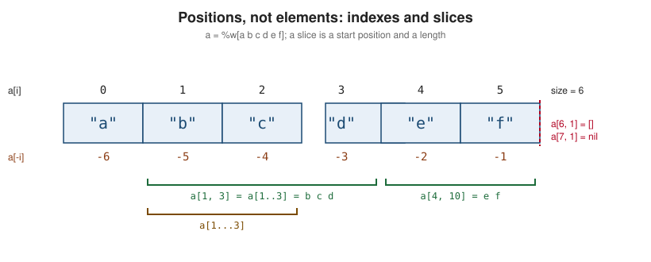

Arrays
|
This content was generated with the assistance of AI and should be verified against the official documentation before being relied on in production. |
This page is written against Ruby 4.0 (4.0.7, checked on 2026-10-18); features newer than Ruby 3.0 name the version that introduced them.
An Array is Ruby’s ordered, integer-indexed, growable collection of object references. It is the collection the language
reaches for first: String#split, Enumerable#map, Hash#to_a, every *rest parameter and every multiple
assignment produce or consume one. This page covers the class in depth: how arrays are created and indexed, the exact
slicing rules, every way to add, remove and replace elements, the methods Array defines itself and the ones it gets from
Enumerable, searching (including binary search), sorting, set-like
operations, flattening and combining, packing binary data with pack and unpack, equality and copying, destructuring,
subclassing, and what changes when several threads or Ractors touch the same array.
The literal syntax ([], %w, %i) is introduced in Literals, hash tables are in
Hashes, the unordered unique collection is
Sets, ranges (which share the slicing syntax) are in
Ranges, and the lazy and external iteration protocol behind
each_slice and friends is in Enumerators and Lazy Evaluation.
Matching array shapes with case/in is the subject of
Pattern Matching. For comparison with other languages, the Rust Vec is in
Rust collections (Go slices have a page of their own on this site).
Every example on this page was syntax-checked with ruby -wc, run with ruby -w on Ruby 4.0.7 and linted with
RuboCop 1.92 using the configuration of the running shelf gem (target Ruby 4.0, double-quoted strings). The output
shown in # => comments is the real output, copied from running the file. Examples that need the library
(require "shelf") use the shelf catalogue used throughout this section (Shelf::Book, Shelf::Isbn,
Shelf::Catalog; see the shelf gem source); the other examples are self-contained and can be run on their own.
What an Array is
An Array is an object of class Array that holds an ordered sequence of references to other objects. Four properties
explain almost every behaviour on this page:
-
Ordered and indexed. Each element has an integer position starting at 0. Negative indexes count from the end (
-1is the last element). The order is the insertion order and is never rearranged unless you ask for it. -
Heterogeneous. An array stores references, not values of one type, so
[1, "two", :three, nil, [5, 6]]is valid. There is no element type to declare (a signature such asArray[String]exists only in RBS, see Type Checking with RBS, TypeProf, Steep and Sorbet). -
Growable. There is no capacity to declare. Appending beyond the end grows the underlying storage automatically and, amortised over many appends, costs constant time per element.
-
A collection of references. Copying an array copies the references, not the objects they point to. This is the source of the shared-default pitfall and of the shallow-copy behaviour covered later in this page.
Array includes Enumerable, so map, select, sort_by, group_by,
each_slice and the rest are available on every array. Array also defines its own versions of many of them
(each, map, select, first, include?, sum, min, max, sort, uniq, zip, take, drop, …) that are
faster or that return an Array where the Enumerable version would return an Enumerator; Ruby 4.0 added Array#find
and Array#rfind the same way (see the iteration section). Other core classes convert to and from arrays through
the implicit to_ary and the explicit to_a, described in the conversion section and in
Conversions and Coercion.
The diagram shows why dup is shallow: the copy gets its own row of references but the objects at the end of them
(including the nested array) are shared.
Creating arrays
Literals, %w and %i
The array literal is a comma-separated list in square brackets; a trailing comma is allowed and the elements can span
lines. %w[...] builds an array of strings split on whitespace (no interpolation, %W interpolates), and %i[...]
builds an array of symbols (%I interpolates). Both are listed with the other % literals in
Literals. RuboCop’s Style/WordArray and Style/SymbolArray ask for them
once an array has several plain words or symbols (default threshold 2).
Array.new, Array(), Array.try_convert and the splat
Array.new accepts four forms: no arguments (an empty array, which RuboCop prefers written as []), a size with an
optional single default object, a size with a block that computes each element from its index, and an existing array
to copy. Array.[] is the method behind the literal (Array[1, 2] equals [1, 2]); RuboCop’s
Style/RedundantArrayConstructor asks for the literal. Array() (a Kernel method) is the forgiving converter: nil
becomes [], an Array is returned unchanged (the same object), anything responding to to_ary or to_a is
converted, and everything else is wrapped in a one-element array. That makes it the idiomatic way to normalise an
argument that may be one value or many. Array.try_convert calls only to_ary and returns nil instead of
raising, which is what library code uses to detect "is this array-like?". The splat * inside a literal splices any
to_a-able object (ranges, hashes, sets) into the new array.
# frozen_string_literal: true
# Creating arrays
titles = %w[Dune Emma Ulysses] # => ["Dune", "Emma", "Ulysses"]
words = %w[red green blue] # => ["red", "green", "blue"]
symbols = %i[open closed lost] # => [:open, :closed, :lost]
mixed = [1, "two", :three, 4.0, nil, [5, 6]] # => [1, "two", :three, 4.0, nil, [5, 6]]
[titles.class, titles.size, words.size, symbols.size, mixed.size] # => [Array, 3, 3, 3, 6]
Array.new(0) # => []
Array.new(3) # => [nil, nil, nil]
Array.new(3, 0) # => [0, 0, 0]
Array.new(4) { |i| i * i } # => [0, 1, 4, 9]
Array.new(words) # => ["red", "green", "blue"]
(1..5).to_a # => [1, 2, 3, 4, 5]
("a".."e").to_a # => ["a", "b", "c", "d", "e"]
[*1..3, *"x".."z"] # => [1, 2, 3, "x", "y", "z"]
Array(nil) # => []
Array(words).equal?(words) # => true
Array(1..3) # => [1, 2, 3]
Array("text") # => ["text"]
Array({ a: 1 }) # => [[:a, 1]]
Array.try_convert([1]) # => [1]
Array.try_convert("no") # => nil
"a,b,c".split(",") # => ["a", "b", "c"]
"abc".chars # => ["a", "b", "c"]
{ a: 1, b: 2 }.to_a # => [[:a, 1], [:b, 2]]Array(1..3) expanded the range and Array({ a: 1 }) turned a hash into key/value pairs, while Array("text") did not
split the string: Kernel#Array calls to_ary then to_a, and String defines neither. Strings are split explicitly
with chars, lines or split.
The shared-default pitfall
Array.new(size, object) stores the same object in every slot. For an immutable default (0, nil, a symbol) that is
harmless, but for a mutable one ([], {}, a String) every slot aliases the same object, so a change through one
index appears in all of them. The block form evaluates the block once per slot and therefore creates a fresh object
each time. The same trap exists for Hash.new([]), covered on
Hashes and listed again in
Common Mistakes and Gotchas.
# frozen_string_literal: true
# The shared-default pitfall
rows = Array.new(2, [])
rows[0] << "x"
rows.to_a # => [["x"], ["x"]]
rows[0].equal?(rows[1]) # => true
grid = Array.new(2) { [] }
grid[0] << "x"
grid.to_a # => [["x"], []]
text = Array.new(2, +"ab")
text[0] << "!"
text.to_a # => ["ab!", "ab!"]With # frozen_string_literal: true a bare "ab" would be frozen, so the example uses +"ab" (a mutable copy) to show
the aliasing: Array.new(2, +"ab") still holds a single string object twice. RuboCop does not flag this one, so the habit has to be: mutable default, use the block.
Indexing and slicing
The [] method (also spelled slice) is the single entry point for reading by position. Its result depends on what it is given:
| Call | Returns | Out of range |
|---|---|---|
|
the element at index |
|
|
a new array of up to |
|
|
a new array covering the range (inclusive |
same rule as |
|
elements at every |
|
|
the first or last element, or an array of up to |
|
|
an array of the elements at those indexes (ranges allowed) |
|
|
the element at |
|
|
the elements at those indexes, as |
|
The two out-of-range rows for a[start, length] and a[range] are the ones that surprise people: a slice that starts
exactly one past the last element is an empty array, not nil, because that position is a valid insertion point. Starting
any further out returns nil. The figure shows the same rule: a slice names a start position and a length, and the
position just after the last element (index 6 here) is still on the array.

# frozen_string_literal: true
# Indexing and slicing
a = %w[a b c d e f] # => ["a", "b", "c", "d", "e", "f"]
a[0] # => "a"
a[-1] # => "f"
a[6] # => nil
a[-7] # => nil
a.at(2) # => "c"
a.first # => "a"
a.first(2) # => ["a", "b"]
a.last(2) # => ["e", "f"]
a[1, 3] # => ["b", "c", "d"]
a[1..3] # => ["b", "c", "d"]
a[1...3] # => ["b", "c"]
a[2..] # => ["c", "d", "e", "f"]
a[..2] # => ["a", "b", "c"]
a[-3..] # => ["d", "e", "f"]
a[4, 10] # => ["e", "f"]
a[6, 1] # => []
a[7, 1] # => nil
a[6..] # => []
a[7..] # => nil
a[(0..).step(2)] # => ["a", "c", "e"]
a[(..-1) % 3] # => ["a", "d"]
a.values_at(0, 2, -1, 9) # => ["a", "c", "f", nil]The arithmetic-sequence forms in the last two slice lines are Ruby 3.0 additions: (0..).step(2) and (..-1) % 3 build an
Enumerator::ArithmeticSequence, and Array#[] accepts it. A negative step reverses the direction. The % on a range
is a shorthand for step that exists for exactly this use.
fetch, dig, values_at and sampling
[] returns nil for a missing position, which cannot be told apart from a stored nil. When a missing position is a
bug, use fetch: it raises IndexError with the valid bounds (index 9 outside of array bounds: -6...6), or returns a
default or the value of a block. fetch_values (Ruby 3.4) is values_at with fetch semantics, and Ruby 4.0 made
the error it raises name Array#fetch_values instead of an internal frame. dig follows a path through nested arrays
and hashes and stops with nil at the first nil; the rules are described in the official
dig methods page. sample and shuffle take a
random: keyword so tests can seed them, which is how the output below is reproducible.
# frozen_string_literal: true
a = %w[a b c d e f] # => ["a", "b", "c", "d", "e", "f"]
a.fetch(1) # => "b"
a.fetch(9, "none") # => "none"
a.fetch(9) { |i| "no #{i}" } # => "no 9"
begin
a.fetch(9)
rescue IndexError => e
e.message # => "index 9 outside of array bounds: -6...6"
end
a.fetch_values(0, -1) # => ["a", "f"]
begin
a.fetch_values(0, 9)
rescue IndexError => e
e.message # => "index 9 outside of array bounds: -6...6"
end
a.take(2) # => ["a", "b"]
a.drop(4) # => ["e", "f"]
a.take_while { |s| s < "c" } # => ["a", "b"]
a.drop_while { |s| s < "e" } # => ["e", "f"]
a.sample.class # => String
a.shuffle(random: Random.new(1)) # => ["c", "b", "e", "a", "d", "f"]
a.sample(2, random: Random.new(7)) # => ["e", "b"]
nested = [[1, [2, 3]], { name: "Ana", tags: %w[x y] }]
nested.dig(0, 1, 0) # => 2
nested.dig(1, :tags, 1) # => "y"
nested.dig(0, 5, 0) # => nil
a.slice(1, 2) # => ["b", "c"]
copy = a.dup
copy.slice!(1, 2) # => ["b", "c"]
copy.join # => "adef"The slice! call at the end is the
destructive twin of slice: it removes the selected elements and returns them, so copy is left with the rest.
Modifying an array
Adding, removing and replacing
An array is mutable (unless frozen, see below), and most of its methods exist in a pure form and a mutating form. The mutating methods that add or remove elements return the receiver or the removed element, which decides how they chain:
| Method | Effect | Returns |
|---|---|---|
|
add to the end ( |
the array |
|
add to the front |
the array |
|
insert before |
the array |
|
append the elements of every argument array |
the array |
|
remove from the end or the front (one element, or an array of |
the element or array, |
|
remove every element |
|
|
remove by position |
the removed element or array, |
|
remove by predicate |
the array ( |
|
remove |
new array; |
|
empty the array; replace its contents with another array’s |
the array |
|
overwrite elements in place |
the array |
The bang-method rule is the most common trap here: methods that end in ! return nil when they made no change, so
array.compact!.first raises NoMethodError on a clean array. Do not chain them; call them as statements and use the
array afterwards, or use the non-bang form.
# frozen_string_literal: true
# Adding and removing
q = %w[b c] # => ["b", "c"]
q.push("d") # => ["b", "c", "d"]
q << "e" # => ["b", "c", "d", "e"]
q.append("f", "g") # => ["b", "c", "d", "e", "f", "g"]
q.unshift("a") # => ["a", "b", "c", "d", "e", "f", "g"]
q.prepend("x", "y") # => ["x", "y", "a", "b", "c", "d", "e", "f", "g"]
q.pop # => "g"
q.shift # => "x"
q.pop(2) # => ["e", "f"]
q.shift(2) # => ["y", "a"]
q.to_a # => ["b", "c", "d"]
extra = %w[m n]
q.insert(1, "p", "q") # => ["b", "p", "q", "c", "d"]
q.insert(-2, "z") # => ["b", "p", "q", "c", "z", "d"]
q.concat(extra, extra.map(&:upcase)) # => ["b", "p", "q", "c", "z", "d", "m", "n", "M", "N"]
q.delete("z") # => "z"
q.delete("nothing") # => nil
q.delete("nothing") { |v| "no #{v}" } # => "no nothing"
q.delete_at(0) # => "b"
q.delete_at(40) # => nil
q.delete_if { |s| s == "m" } # => ["p", "q", "c", "d", "n", "M", "N"]
q.compact! # => nil
[1, nil, 2, nil].compact # => [1, 2]
q.clear # => []
r = %w[a b c d e]
r[1] = "B" # => "B"
r[1, 2] = %w[x y z] # => ["x", "y", "z"]
r.to_a # => ["a", "x", "y", "z", "d", "e"]
r[1..2] = [] # => []
r.to_a # => ["a", "z", "d", "e"]
r[7] = "h" # => "h"
r.to_a # => ["a", "z", "d", "e", nil, nil, nil, "h"]
r[0, 0] = %w[first] # => ["first"]
r.first # => "first"
r.fill("-") # => ["-", "-", "-", "-", "-", "-", "-", "-", "-"]
Array.new(5).fill { |i| i * 2 } # => [0, 2, 4, 6, 8]
Array.new(5).fill(9, 3) # => [nil, nil, nil, 9, 9]
Array.new(5).fill(1, 1, 2) # => [nil, 1, 1, nil, nil]
r.replace(%w[one two]) # => ["one", "two"]Assignment through []=
[]= is more capable than reading suggests. a[i] = x replaces one element. a[start, length] = other and
a[range] = other replace a whole slice with the elements of other (an array is spliced, any other object is
inserted as one element), so the array can grow or shrink: assigning [] deletes a slice, and a zero length inserts
without removing (r[0, 0] = %w[first]). Assigning past the end pads the gap with nil (r[7] = "h" on a four-element
array adds three nil`s). Negative indexes counted beyond the front raise `IndexError. Ruby 3.4 forbids block and keyword
arguments in an index assignment such as a[0, k: 1] = 2; see
Assignment and Multiple Assignment.
Frozen arrays and FrozenError
Every mutating method above raises FrozenError on a frozen array (message: can't modify frozen Array: ["x", "y"]).
Freezing is shallow: the array’s own slots are locked, but the elements it references are not, so
mutable.first << "!" still works on a frozen array of mutable strings (the example builds the string with +"x", because the magic comment froze the literal words of fixed). Constants holding arrays are usually frozen for
this reason (NAMES = %w[a b].freeze), and # frozen_string_literal: true freezes plain string literals (including the words of a %w array)
but never the array itself. Details and the deep-freeze helpers are in
Object Lifecycle, Freezing and Copying.
Iterating and transforming
each is the primitive: it yields every element in order and returns the receiver. each_with_index, each_index,
reverse_each, each_slice(n), each_cons(n), each_entry and cycle are variations on it. Every iterator called
without a block returns an Enumerator, which is how they chain (each_with_index.map, map.with_index(1)). A
for loop over an array is just each without a new scope and is rarely used; see
Control Expressions.
The transformation methods come from Enumerable but are what you use on arrays daily:
-
map/collectreturns a new array of the block’s results,flat_mapflattens one level of results,filter_mapmaps and drops falsy results in one pass. -
select/filterandrejectkeep or drop by predicate,partitionreturns both halves,group_byreturns a hash of arrays,tallycounts occurrences,each_with_objectthreads an accumulator (an alternative toinjectthat does not need the block to return it). -
inject/reducefolds to one value:inject(:+)with a symbol,inject(1) { |acc, n| ... }with a seed.sumis the specialised form for addition and is both clearer and faster. -
count,any?,all?,none?,one?take either a block or a pattern argument tested with===(all?(Integer),none?(0)). -
find/detectreturns the first match;find_index/indexandrindexreturn a position. Ruby 4.0 addedArray#findandArray#rfind.rfindis the efficient replacement forreverse_each.find: it scans from the end without building an enumerator. -
min,max(both accept a count,max(2)),minmax, andmin_by,max_by,minmax_byfor a key. -
take,drop,take_while,drop_while,chunk_while,slice_whenfor prefixes and runs, andlazyto defer the whole pipeline (see Enumerators and Lazy Evaluation).
# frozen_string_literal: true
# Iterating and transforming
nums = [3, 1, 4, 1, 5, 9, 2, 6]
nums.each_with_index.map { |n, i| n * i } # => [0, 1, 8, 3, 20, 45, 12, 42]
nums.each_slice(3).to_a # => [[3, 1, 4], [1, 5, 9], [2, 6]]
nums.each_cons(3).first(2) # => [[3, 1, 4], [1, 4, 1]]
nums.each_with_object([]) { |n, acc| acc.unshift(n) } # => [6, 2, 9, 5, 1, 4, 1, 3]
nums.map.with_index(1) { |n, i| "#{i}:#{n}" }.first(3) # => ["1:3", "2:1", "3:4"]
nums.select(&:even?) # => [4, 2, 6]
nums.reject { |n| n > 4 } # => [3, 1, 4, 1, 2]
nums.partition { |n| n > 3 } # => [[4, 5, 9, 6], [3, 1, 1, 2]]
nums.group_by(&:odd?) # => {true => [3, 1, 1, 5, 9], false => [4, 2, 6]}
nums.filter_map { |n| n * 10 if n > 4 } # => [50, 90, 60]
nums.flat_map { |n| [n] * (n > 5 ? 2 : 0) } # => [9, 9, 6, 6]
nums.tally # => {3 => 1, 1 => 2, 4 => 1, 5 => 1, 9 => 1, 2 => 1, 6 => 1}
nums.sum # => 31
nums.inject(:+) # => 31
nums.reduce(1) { |acc, n| acc * n } # => 6480
nums.count(1) # => 2
nums.count(&:even?) # => 3
nums.any? { |n| n > 8 } # => true
nums.all?(Integer) # => true
nums.none?(0) # => true
nums.one?(9) # => true
nums.find { |n| n > 4 } # => 5
nums.rfind { |n| n < 4 } # => 2
nums.find_index(4) # => 2
nums.index { |n| n > 4 } # => 4
nums.rindex(1) # => 3
nums.reverse_each.first(2) # => [6, 2]
nums.cycle.first(10) # => [3, 1, 4, 1, 5, 9, 2, 6, 3, 1]
nums.min # => 1
nums.max(2) # => [9, 6]
nums.minmax # => [1, 9]
nums.take_while { |n| n < 5 } # => [3, 1, 4, 1]
[1, 2, 4, 9, 10, 11].chunk_while { |a, b| b == a + 1 }.to_a # => [[1, 2], [4], [9, 10, 11]]
nums.slice_when { |a, b| b < a }.to_a # => [[3], [1, 4], [1, 5, 9], [2, 6]]
nums.each_entry.to_a.size # => 8
nums.lazy.select(&:odd?).map { |n| n * 2 }.first(2) # => [6, 2]The full Enumerable catalogue, with the shelf catalogue as the running example, is on
Enumerable. Two array-specific points matter in practice. First, Ruby 3.4
rewrote Array#each, #map and #select in Ruby itself so the JIT can inline their blocks, and 4.0 made Array#find
a native override of Enumerable#find; this changes backtraces (frames named <internal:array>), not behaviour. Second,
never add or remove elements of an array while iterating over it with each: the loop tracks an index, so deleting an
element makes it skip the next one (see the pitfalls section).
Searching
include? is a linear scan using ==, index returns the position of the first match, rindex of the last,
assoc and rassoc search an array of pairs by first or second element, and intersect? (Ruby 3.1) answers "do these two
arrays share any element" without allocating the intersection array. All of them are O(n); if you search the same array
repeatedly, convert it once to a Set or a hash.
Binary search with bsearch
For a sorted array, bsearch finds a value in O(log n) with the block deciding which half to keep. It has two modes,
chosen by what the block returns:
-
Find-minimum mode. The block returns
trueorfalse(ornil) and the array must be partitioned: every element that givesfalsecomes before every element that givestrue.bsearchreturns the first element for which the block is true, ornil. -
Find-any mode. The block returns a number:
0means "this is the element", a negative number means "look at the left half", a positive number means "look at the right half". The natural block istarget <=> element, andbsearchreturns the matching element ornil.
bsearch_index returns the index instead of the element. If the array is not actually sorted by the same ordering
the block uses, the result is unspecified: it can be nil or an arbitrary element, and no error is raised. The
official binary search guide describes the modes in
detail; Range#bsearch uses the same contract on numeric ranges.
# frozen_string_literal: true
# Searching: include?, bsearch
a = [3, 1, 4, 1, 5]
a.include?(4) # => true
a.index(1) # => 1
a.intersect?([9, 5]) # => true
pairs = [[:a, 1], [:b, 2]]
pairs.assoc(:b) # => [:b, 2]
pairs.rassoc(1) # => [:a, 1]
sorted = [1, 3, 5, 7, 9, 11]
sorted.bsearch { |x| x >= 6 } # => 7
sorted.bsearch_index { |x| x >= 6 } # => 3
sorted.bsearch { |x| x >= 100 } # => nil
sorted.bsearch { |x| 7 <=> x } # => 7
sorted.bsearch { |x| 4 <=> x } # => nil
sorted.bsearch_index { |x| 11 <=> x } # => 5
unsorted = [9, 1, 7, 3]
unsorted.bsearch { |x| x >= 5 } # => 7The last line searches an unsorted array and happens to return an element: do not read meaning into it.
Sorting and ordering
sort returns a new array ordered by <=>, sort! sorts in place and returns the receiver. With a block it uses the
block’s -1/0/1 result (sort { |a, b| b <=> a } for descending). Elements must be comparable with each other:
[3, "a", 1].sort raises ArgumentError ("comparison of Integer with String failed") and so does [3, nil].max, because
the comparison returned nil. A class that wants to be sortable defines <=> and, for the comparison operators,
includes Comparable (see Equality, Hashing and Comparison).
Arrays compare element by element, so a sort_by key that is an array sorts by several fields in order.
sort_by computes the key once per element and then sorts by the keys, which is cheaper than a comparison block when
the key is expensive (it is the Schwartzian transform built in). min_by, max_by and minmax_by follow the same key
convention. reverse, rotate(n) (a negative n rotates the other way) and the in-place reverse!/rotate!
rearrange without sorting. sort_by { |w| -w.size } is a common descending sort for numeric keys; for non-numeric keys
use sort_by { ... }.reverse or a block with b <=> a.
# frozen_string_literal: true
# Sorting
words = %w[pear Fig apple fig kiwi]
words.sort # => ["Fig", "apple", "fig", "kiwi", "pear"]
words.sort_by(&:downcase) # => ["apple", "Fig", "fig", "kiwi", "pear"]
words.sort_by { |w| [w.size, w] } # => ["Fig", "fig", "kiwi", "pear", "apple"]
words.sort { |a, b| b <=> a } # => ["pear", "kiwi", "fig", "apple", "Fig"]
words.sort_by { |w| -w.size } # => ["apple", "pear", "kiwi", "Fig", "fig"]
words.max_by(&:size) # => "apple"
words.min_by(2, &:size) # => ["Fig", "fig"]
words.minmax_by(&:size) # => ["Fig", "apple"]
words.max # => "pear"
words.max { |a, b| a.size <=> b.size } # => "apple"
words.reverse # => ["kiwi", "fig", "apple", "Fig", "pear"]
words.rotate # => ["Fig", "apple", "fig", "kiwi", "pear"]
words.rotate(-2) # => ["fig", "kiwi", "pear", "Fig", "apple"]
copy = words.dup
copy.sort! # => ["Fig", "apple", "fig", "kiwi", "pear"]
copy.sort!.equal?(copy) # => true
copy.reverse!.first # => "pear"
begin
[3, "a", 1].sort
rescue ArgumentError => e
e.message # => "comparison of Integer with String failed"
end
begin
[3, nil].max
rescue ArgumentError => e
e.message # => "comparison of Integer with nil failed"
end
[0.1, 0.2, 0.3].sum # => 0.6
[0.1, 0.2, 0.3].inject(:+) # => 0.6000000000000001
[[2, "b"], [1, "z"], [2, "a"]].sort # => [[1, "z"], [2, "a"], [2, "b"]]
[1, 2, 3, 4].sort_by { |n| n.even? ? 0 : 1 } # => [2, 4, 1, 3]
(1..20).sort_by { |n| n % 3 }.first(8) # => [3, 6, 18, 9, 12, 15, 1, 4][0.1, 0.2, 0.3].sum returned 0.6 while inject(:+) returned 0.6000000000000001: Array#sum uses the
Kahan-Babuska compensated summation for floats, so prefer it to a manual fold. sum of non-numbers needs an initial
value (%w[a b].sum(""), [[1], [2]].sum([])); without one it raises TypeError because the start value is 0.
Sorting is not stable. Ruby does not guarantee that equal keys keep their original order, and sort_by { |n| n % 3 }
over 1..20 gave [3, 6, 18, 9, 12, 15, ...] in the run above, not [3, 6, 9, 12, ...]. If you need a stable order,
add the original index as a tie-breaker: sort_by.with_index { |x, i| [key(x), i] }. Never rely on the observed order of
a particular Ruby version.
Set-like operations
Arrays support the set operators by value, using hash and eql? internally, and keep the order of first
appearance and any duplicates in the receiver for the operators that do not deduplicate:
-
a | b(union) anda & b(intersection) return a new array without duplicates;unionandintersectiontake any number of arguments. -
a - b(difference) keeps the elements ofanot inb, including duplicates ofa([1, 2, 2] - [3]keeps both 2s). -
a + bconcatenates and keeps everything;a * nrepeats;a * "sep"isjoin. -
uniqanduniq { |x| key }deduplicate (the block form keeps the first element for each key),uniq!returnsnilif nothing changed. -
intersect?(other)(Ruby 3.1) is the boolean form of&.
Because the operators use eql? and hash, 1 and 1.0 are different elements ([1, 1.0, 1r].uniq keeps all three),
unlike ==. For frequent membership tests or large inputs, use a Set: Set is a core class in Ruby 4.0 (before 3.2
it needed require "set"), and to_set converts an array. See Sets.
# frozen_string_literal: true
# Set operations and uniqueness
a = [1, 2, 2, 3, 4]
b = [3, 4, 4, 5]
[a | b, a & b] # => [[1, 2, 3, 4, 5], [3, 4]]
a.union(b, [9]) # => [1, 2, 3, 4, 5, 9]
a.intersection(b) # => [3, 4]
a.difference(b) # => [1, 2, 2]
a.intersect?(b) # => true
a.uniq # => [1, 2, 3, 4]
%w[apple Avocado banana Blueberry].uniq { |w| w[0].downcase } # => ["apple", "banana"]
a.dup.uniq! # => [1, 2, 3, 4]
[1, 2].uniq! # => nil
words = %w[a b a]
[words - ["a"], words + ["z"]] # => [["b"], ["a", "b", "a", "z"]]
[words * 2, words * "-"] # => [["a", "b", "a", "a", "b", "a"], "a-b-a"]
[[1, 2], [3]].sum([]) # => [1, 2, 3]
[1, 1.0, 1r].uniq # => [1, 1.0, (1/1)]
[[1], [1]].uniq.size # => 1
a.to_set # => Set[1, 2, 3, 4]
Set.new(a).subset?(Set.new(1..5)) # => trueFlattening and combining
flatten removes nesting recursively, or to a depth (flatten(1)); flatten! returns nil when there was nothing to
flatten. It flattens anything that responds to to_ary, not only arrays, and raises ArgumentError on a recursive
array. zip pairs the elements of the receiver with those of one or more other collections (the result is as long as
the receiver, padding with nil, and an endless range works), transpose swaps rows and columns of an array of equal
length arrays (IndexError otherwise), product is the Cartesian product, and combination(k),
permutation(k), repeated_combination(k) and repeated_permutation(k) enumerate the arrangements (they return
enumerators when called without a block; materialising them with to_a is exponential). each_slice and each_cons
batch and slide. to_h turns an array of pairs, or the result of a block, into a Hash. join converts every element
with to_s and flattens nested arrays recursively; nil becomes an empty string. cycle repeats forever, or n times.
# frozen_string_literal: true
# Flatten, zip, product and friends
nested = [1, [2, [3, [4]]]]
nested.flatten # => [1, 2, 3, 4]
nested.flatten(1) # => [1, 2, [3, [4]]]
[1, [2]].flatten!.nil? # => false
[1, 2].flatten!.nil? # => true
[1, 2, 3].zip([4, 5, 6], [7, 8, 9]) # => [[1, 4, 7], [2, 5, 8], [3, 6, 9]]
[1, 2, 3].zip([4]) # => [[1, 4], [2, nil], [3, nil]]
%w[a b].zip(1..) # => [["a", 1], ["b", 2]]
%w[a b c].zip(1..3).to_h # => {"a" => 1, "b" => 2, "c" => 3}
[[1, 2], [3, 4], [5, 6]].transpose # => [[1, 3, 5], [2, 4, 6]]
[1, 2].product([3, 4]) # => [[1, 3], [1, 4], [2, 3], [2, 4]]
[1, 2].product([3], [5, 6]).size # => 4
[1, 2, 3].combination(2).to_a # => [[1, 2], [1, 3], [2, 3]]
[1, 2, 3].permutation(2).count # => 6
[1, 2].repeated_permutation(2).to_a # => [[1, 1], [1, 2], [2, 1], [2, 2]]
[1, 2, 3].each_cons(2).to_a # => [[1, 2], [2, 3]]
[1, 2, 3, 4].each_slice(2).map(&:sum) # => [3, 7]
[3, 1, 2].sum { |n| n * 2 } # => 12
%w[a b].sum("") # => "ab"
[[1], [2]].sum([]) # => [1, 2]
begin
%w[a b].sum
rescue TypeError => e
e.message # => "String can't be coerced into Integer"
end
[1, 2, 3].inject { |a, b| a * b } # => 6
[1, [2, 3]].join(",") # => "1,2,3"
[1, nil, "a"].join("-") # => "1--a"
%w[a b c].join # => "abc"
[1, 2, 3].cycle(2).to_a # => [1, 2, 3, 1, 2, 3]
[1, 2, 3, 4, 5].values_at(0, 2..3) # => [1, 3, 4]
(1..10).each_slice(4).to_a # => [[1, 2, 3, 4], [5, 6, 7, 8], [9, 10]]
[1, 2, 3].to_h { |n| [n, n * n] } # => {1 => 1, 2 => 4, 3 => 9}
[[:a, 1]].to_h # => {a: 1}Packing binary data: pack and unpack
Array#pack turns an array of values into a binary string according to a template of directive letters, and
String#unpack and String#unpack1 do the reverse. The result of pack has the ASCII-8BIT (BINARY) encoding unless the
template starts with U, so the same call is the standard way to build a protocol header or read a fixed-width record.
The directives that cover most needs:
| Directive | Meaning | Notes |
|---|---|---|
|
unsigned / signed 8-bit integer |
|
|
16, 32 and 64-bit integers (unsigned / signed) |
native endianness; add |
|
16 / 32-bit unsigned, network (big-endian) |
|
|
a Unicode code point, written as UTF-8 |
the only directive that makes the string UTF-8; |
|
string padded with NUL ( |
a count gives the field width, |
|
hex or bit string, high or low nibble / bit first |
|
|
Base64, strict Base64 (no newlines), quoted-printable, uuencode |
|
|
IEEE floats and doubles, little or big endian or native |
|
Since Ruby 3.3, an unknown directive raises ArgumentError instead of being silently ignored, and pack accepts
buffer: to append into an existing string. Every directive, modifier and the exact semantics are in the official
packed data page.
# frozen_string_literal: true
# pack and unpack
[65, 66, 67].pack("C*") # => "ABC"
[65, 66, 67].pack("c3") # => "ABC"
[1, 2].pack("S>L<").bytes # => [0, 1, 2, 0, 0, 0]
[1].pack("N").bytes # => [0, 0, 0, 1]
[1].pack("V").bytes # => [1, 0, 0, 0]
[97, 0x20AC].pack("U*") # => "a€"
%w[abc de].pack("A5a3").bytes # => [97, 98, 99, 32, 32, 100, 101, 0]
["abc"].pack("Z*").bytes # => [97, 98, 99, 0]
["hello"].pack("m") # => "aGVsbG8=\n"
["hello"].pack("m0") # => "aGVsbG8="
["616263"].pack("H*") # => "abc"
["a b"].pack("M") # => "a b=\n"
[1.5].pack("E").unpack1("E") # => 1.5
"AB".unpack("C*") # => [65, 66]
"\x00\x00\x01\x00".unpack1("N") # => 256
"aGVsbG8=\n".unpack1("m") # => "hello"
"abc".unpack1("H*") # => "616263"
"abc".unpack("a1 a1 a1") # => ["a", "b", "c"]
[1, 2, 3].pack("C*").encoding # => #<Encoding:BINARY (ASCII-8BIT)>
["x"].pack("a").encoding # => #<Encoding:BINARY (ASCII-8BIT)>
[1].pack("w").bytes # => [1]
[300].pack("w").bytes # => [130, 44]
begin
[1].pack("y")
rescue ArgumentError => e
e.message # => "unknown pack directive 'y' in 'y'"
end
begin
["a"].pack("C")
rescue TypeError => e
e.message # => "no implicit conversion of String into Integer"
end
buffer = +"hdr:"
[1, 2].pack("C*", buffer: buffer) # => "hdr:\u0001\u0002"Array#pack converts each element with the implicit conversion the directive needs (to_int, to_str, to_f), so a wrong element type fails with TypeError (no implicit
conversion of String into Integer) rather than packing garbage.
Equality, copying and freezing
Two arrays are == when they have the same length and every pair of elements at the same index is ==; eql?
requires eql? elements and is what Hash uses for keys, and equal? is identity. hash is computed from the
elements, so equal arrays are interchangeable as hash keys (as long as nobody mutates them afterwards). <=>
compares element by element and then by length, and returns nil when two elements are not comparable, which is why
[1, 2] <=> [1, "a"] is nil. See Equality, Hashing and Comparison
for the contract.
dup and clone copy the array but not its elements, so the copy and the original share every element object: changing
a nested array through the copy changes it in the original. clone additionally keeps the frozen state and the singleton
class (clone(freeze: false) unfreezes the copy). For a real deep copy the portable core option is
Marshal.load(Marshal.dump(array)), which fails on objects that cannot be dumped (procs, IO, singleton objects); a
domain-specific deep_dup is better when you control the types. Ractor.make_shareable freezes an array and everything
it references, recursively, which is also what you need to share it with a Ractor.
# frozen_string_literal: true
# Equality, copies, freezing
a = [1, [2, 3]]
b = [1, [2, 3]]
[a == b, a.eql?(b), a.equal?(b), a.hash == b.hash] # => [true, true, false, true]
[[1, 2] == [1.0, 2.0], [1, 2].eql?([1.0, 2.0])] # => [true, false]
[[1, 2] <=> [1, 3], [1, 2] <=> [1], [1, 2] <=> [1, "a"]] # => [-1, 1, nil]
copy = a.dup
copy[1] << 4
a.to_a # => [1, [2, 3, 4]]
deep = Marshal.load(Marshal.dump(a))
deep[1] << 5
[a, deep] # => [[1, [2, 3, 4]], [1, [2, 3, 4, 5]]]
fixed = %w[x y].freeze
begin
fixed << "z"
rescue FrozenError => e
e.message # => "can't modify frozen Array: [\"x\", \"y\"]"
end
mutable = [+"x"].freeze
mutable.first << "!"
mutable.to_a # => ["x!"]
fixed.first.frozen? # => true
[fixed.frozen?, fixed.dup.frozen?, fixed.clone.frozen?] # => [true, false, true]
fixed.clone(freeze: false).frozen? # => false
sealed = Ractor.make_shareable([["a"], ["b"]])
[sealed.frozen?, sealed.first.frozen?, sealed.first.first.frozen?] # => [true, true, true]
list = [1, 2, 3, 4]
list.each { |n| list.delete(n) if n.even? }
list.to_a # => [1, 3]
numbers = [1, 2, 3, 4]
numbers.reject!(&:even?)
numbers.to_a # => [1, 3]
total = []
before = total.object_id
total += [1]
rebound = total.object_id != before # => true
current = total.object_id
total << 2
[rebound, total.object_id == current, total] # => [true, true, [1, 2]]The last four lines show the cost model: total += [1] is total = total + [1], which allocates a new array and rebinds
the variable (the object id changes), while << mutates the existing array in place. In a loop that grows an array,
+= is quadratic; use << or push.
Destructuring, splats and pattern matching
Arrays are the data structure behind multiple assignment. a, b = array calls to_ary on the right side if it
responds to it, head, *tail = array and *init, last = array collect the rest, and parentheses destructure nested
arrays, in assignment and in block parameters (|a, (b, c)|). A block that takes several parameters receives each
element of a yielded array spread across them. The full rules are in
Assignment and Multiple Assignment.
case/in has array patterns: [Integer => a, [b, *rest]] matches a fixed shape, [*, "x", "y", *] is a find pattern
(Ruby 3.0, experimental until 3.2) that looks for a run anywhere in the array, and => and in are the one-line forms
(the rightward point => [px, py] raises NoMatchingPatternError when the shape is wrong, in returns a boolean). A
pattern calls deconstruct, which Array defines to return itself; a custom class opts in by defining it. A case
without an else raises NoMatchingPatternError when nothing matches. See
Pattern Matching.
# frozen_string_literal: true
# Destructuring, pattern matching and conversion
first, second = [10, 20, 30]
[first, second] # => [10, 20]
head, *tail = [1, 2, 3]
[head, tail] # => [1, [2, 3]]
*init, last = [1, 2, 3]
[init, last] # => [[1, 2], 3]
x, (y, z) = [1, [2, 3]]
[x, y, z] # => [1, 2, 3]
[[1, 2], [3, 4]].map { |(p, q)| p + q } # => [3, 7]
[[1, [2, 3]]].map { |a, (b, c)| [a, b, c] } # => [[1, 2, 3]]
[[1, 2], [3, 4]].each_with_index.map { |(m, n), i| (m * n) + i } # => [2, 13]
case [1, [2, 3]]
in [Integer => a, [b, *rest]]
[a, b, rest] # => [1, 2, [3]]
end
case [:ok, 200, "body"]
in [:ok, 200.. => code, String => body]
[code, body] # => [200, "body"]
end
steps = %w[start x y end]
case steps
in [*, "x", "y", *]
[:found].first # => :found
end
result = [1, "two", :three].then do |value|
case value
in [Integer, String, Symbol] then :typed
else :other
end
end
result.to_s # => "typed"
point = [3, 4]
point => [px, py]
Math.hypot(px, py) # => 5.0
[1, 2] in [_, _] # => true
[1, 2, 3] in [_, _] # => false
class Pair
def initialize(left, right)
@left = left
@right = right
end
def to_ary = [@left, @right]
end
l, r = Pair.new(1, 2)
[l, r] # => [1, 2]
[[0, 0], Pair.new(1, 2)].flatten # => [0, 0, 1, 2]
[[0, 0], Pair.new(1, 2)].to_h { |lft, rgt| [lft, rgt] } # => {0 => 0, 1 => 2}The Pair class at the end shows the implicit conversion protocol: defining to_ary makes an object usable on the right
of a multiple assignment and lets flatten flatten it, because both call to_ary rather than to_a. Implement to_ary
only for objects that truly are arrays in disguise; objects that merely can be turned into an array should define
to_a instead, which Array() and the splat use. The distinction is covered in
Conversions and Coercion and in the official
implicit conversion page.
Subclassing Array
Subclassing Array is possible but usually the wrong tool, because most methods return a plain Array rather than an
instance of the subclass (since Ruby 3.0, drop, drop_while, flatten, slice!, []/slice, take, take_while,
uniq and * return Array, not the subclass), while dup and new keep the subclass. The subclass then silently
loses its extra methods after a map or select. Prefer composition: a class that holds an array in an instance variable
and include`s `Enumerable (like Shelf::Catalog, which wraps its store) or delegates with Forwardable.
# frozen_string_literal: true
# Subclassing Array
class Playlist < Array
def total = sum
end
list = Playlist.new([3, 4])
[list.class, list.total] # => [Playlist, 7]
[list.map { _1 }.class, list.select(&:odd?).class, list.dup.class] # => [Array, Array, Playlist]
[list.first(1).class, list[0, 1].class, list.reverse.class] # => [Array, Array, Array]
[list.flatten.class, list.uniq.class, list.take(1).class] # => [Array, Array, Array]
Playlist.new(2) { |i| i + 1 }.class # => Playlist
Playlist[1, 2].class # => PlaylistSource: Ruby 3.0.0 NEWS
Arrays in the shelf catalogue
The shelf catalogue stores books in an array inside Shelf::Store::Memory and exposes them through Shelf::Catalog,
whose each hands out a copy (@books.dup) so that callers cannot mutate the store. Everything in the next example is an
array method chain over that: building the books by zipping titles with ISBN digits, sorting by title, grouping,
partitioning, slicing into pages with each_slice, and turning the loans into their state labels.
# frozen_string_literal: true
require "shelf"
# The shelf catalogue as an array pipeline
author = Shelf::Author.new(name: "Ursula K. Le Guin")
isbns = %w[9780306406157 9780131103627 9780201633610]
titles = ["The Dispossessed", "Tehanu", "A Wizard of Earthsea"]
books = titles.zip(isbns).map do |title, digits|
Shelf::Book.new(isbn: Shelf::Isbn.new(digits:), title:, author:)
end
catalog = books.reduce(Shelf::Catalog.new) { |cat, book| cat.add(book) }
catalog.to_a.size # => 3
catalog.map(&:title) # => ["The Dispossessed", "Tehanu", "A Wizard of Earthsea"]
catalog.sort_by(&:title).map(&:title) # => ["A Wizard of Earthsea", "Tehanu", "The Dispossessed"]
catalog.min_by { |b| b.title.size }.title # => "Tehanu"
catalog.group_by { |b| b.title.split.first.downcase.to_sym }.keys # => [:the, :tehanu, :a]
catalog.partition { |b| b.title.include?("of") }.map(&:size) # => [1, 2]
catalog.each_slice(2).map { |pair| pair.map(&:title) } # => [["The Dispossessed", "Tehanu"], ["A Wizard of Earthsea"]]
catalog.first.isbn.to_s # => "9780306406157"
catalog.each_with_index.to_h { |b, i| [i, b.isbn.digits[-4..]] } # => {0 => "6157", 1 => "3627", 2 => "3610"}
loans = books.map { |b| Shelf::Loan.new(b, state: b.title.size > 10 ? :lent : :available) }
loans.map(&:state) # => [:lent, :available, :lent]
loans.map(&:describe) # => ["The Dispossessed is lent", "Tehanu is on the shelf", "A Wizard of Earthsea is lent"]
loans.count { |l| l.state == :lent } # => 2
books.first.to_s # => "The Dispossessed by Ursula K. Le Guin"
books.frozen? # => falseCatalog is Enumerable, so map, sort_by, min_by, group_by, partition, each_slice and each_with_index work on
it directly, while to_a returns a true array. Note that Shelf::Loan#describe is the pattern-matching case from the
Shelf library; it consumes a one-element hash, not an array.
Arrays and concurrency
An Array is not a thread-safe data structure in the sense of the language specification. CRuby’s global VM lock makes each
individual C-implemented method such as push or << atomic with respect to other Ruby threads, so you will not corrupt
the array’s internal structure, but compound operations (check then act, read-modify-write, iterating while another
thread appends) are not atomic, and other Ruby implementations make weaker guarantees. Guard shared arrays with a
Thread::Mutex (or hand work over with Thread::Queue, which is the thread-safe collection), as Shelf::Catalog does.
Between Ractors an array cannot be shared unless it is deeply frozen and shareable: Ractor.make_shareable(array)
freezes it recursively, and Ractor.shareable? tells you whether it already is. See
Threads and the GVL and
Ractors.
# frozen_string_literal: true
# Compound operations on a shared array need a lock
queue = []
lock = Thread::Mutex.new
workers = Array.new(4) do |n|
Thread.new do
100.times { |i| lock.synchronize { queue << ((n * 100) + i) } }
end
end
workers.each(&:join)
[queue.size, queue.uniq.size] # => [400, 400]
shared = Ractor.make_shareable(%w[a b])
Ractor.shareable?(shared) # => true
Ractor.shareable?(%w[a b]) # => falseSource: Ruby 4.0 documentation: Ractor
Performance notes
Rules of thumb for CRuby; measure with the tools in Performance, Benchmarking and Profiling before acting on them:
-
push,<<,popandshiftrun in amortised constant time (shiftis cheap because the array can share its buffer and just advance a start offset);unshiftis amortised constant time as well;insertin the middle,delete_at,deleteandinclude?/indexare linear. -
+,-,|,&anduniqallocate new arrays;-,&anduniqbuild a hash internally for larger inputs, so they are O(n) rather than O(n * m). -
array += otherin a loop is quadratic;concat,push(*other)and<<mutate in place. -
sumbeatsinject(:+)(and is more accurate for floats);sort_bybeats asortblock when the key is not free;min/maxbeatsort.first/sort.last;rfindbeatsreverse_each.find;Array.new(n) { ... }andmappresize the result. -
Chaining
select.map.rejectallocates an intermediate array per step; usefilter_map,each_with_object,lazyfor very large inputs, or a singleeach. -
A one-million element array of small integers stores them inline as tagged values (a fixnum needs no heap object), but an array of strings is an array of heap objects; memory is dominated by the elements, not the 8-byte slots.
-
Array#pack/String#unpackare the fast path for binary formats; avoid building strings byte by byte.
Common pitfalls
| Mistake | What happens | Fix |
|---|---|---|
|
all three slots are the same array |
|
deleting while iterating with |
the loop skips the element after each removal ( |
|
chaining a bang method ( |
bang methods return |
call it as a statement, or use the non-bang form |
|
pads with |
check bounds or use |
|
|
|
assuming a stable sort |
equal keys may change relative order |
add the index as a tie-breaker |
|
they are not removed |
normalise the elements, or use |
|
|
validate the argument |
|
|
use |
|
no interpolation in |
use |
a frozen array assumed deeply frozen |
elements remain mutable |
|
|
|
pass the start value ( |
block-less |
|
|
Older code you may meet
Code written for older Ruby versions, and older tutorials, differ from the examples above in these ways:
-
Before Ruby 3.4,
Hashresults fromgroup_byandtallywere printed as{true=>[...]}; since 3.4 they print as{true => [...]}, and symbol keys as{a: 1}. Outputs in older blog posts and books look different, not wrong. -
require "set"was needed before Ruby 3.2 (autoload) and is unnecessary in 4.0, whereSetis a core class;SortedSetwas removed in 3.0 (thesorted_setgem). -
Array#sumappeared in Ruby 2.4 and replacesinject(:+)for numbers;filter_mapappeared in 2.7;intersect?in 3.1;fetch_valuesin 3.4;findandrfindin 4.0. -
The ranged arithmetic-sequence index (
a[(0..).step(2)]) was added in 3.0. -
Array#packignoring unknown directives was fixed in 3.3. -
Before Ruby 3.0,
Array#flatten,#drop,#take,#uniqand the slicing methods returned the subclass when called on a subclass instance.
Version notes
| Version | Array-related change |
|---|---|
3.0 |
|
3.1 |
|
3.2 |
|
3.3 |
|
3.4 |
|
4.0 |
|
References
-
Ruby 3.0.0 NEWS, 3.1.0, 3.3.0, 3.4.0 and 4.0.0
-
Comparable, Set, Ractor and Thread::Mutex
-
The Ruby Style Guide and RuboCop Style cops (
Style/WordArray,Style/SymbolArray,Style/RedundantArrayConstructor,Style/PartitionInsteadOfDoubleSelect)